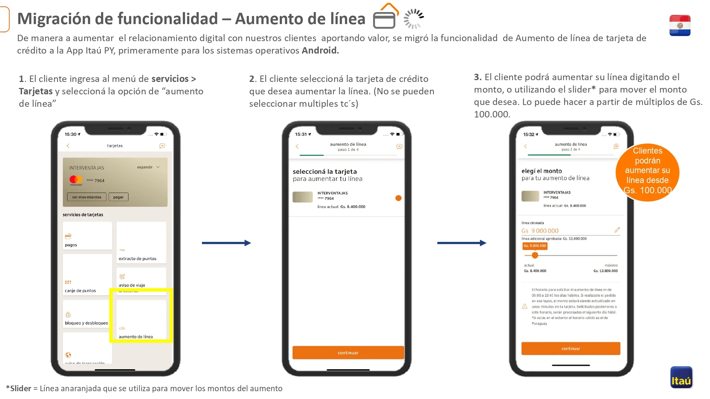
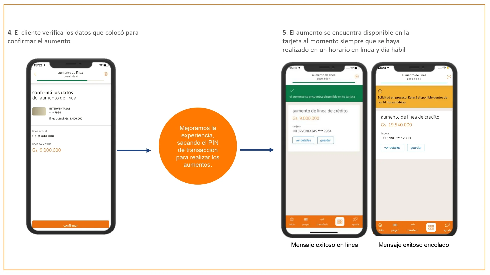

Esta sección resume el proceso de aumento de línea de crédito, criterios de exclusión, tiempos de procesamiento y pantallas clave en SAC.com, AS400 y App Itaú PY.
Validación de cliente y tarjeta en SAC.com
Exclusión de línea pre-aprobada en AS400
Requisitos y casos excluidos para aumento
Procesamiento en línea vs. encolado
Confirmación y éxito en App Itaú PY
📍 Validación en SAC.com y AS400
Consulta de línea real en "Datos TC → Tarjeta"
Confirmación de exclusión en opción D01

📋 Requisitos y Exclusiones
Cliente digital con línea pre-aprobada
Excluidos: adicionales, sin línea, corporativos, empleados

⏱️ Tiempos de Procesamiento
Solicitudes antes de las 14:55 → aumento al instante
Solicitudes después → procesadas a las 15:00 del siguiente día hábil